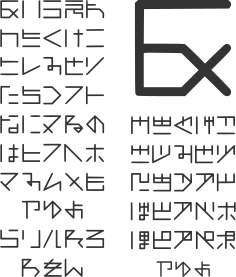

ギリ読めないフォント
「ギリギリ読めないフォント」を目指し、幾何学的なイメージで作りました。ゲームの遺跡の古代文字にも使えるかもしれません。
収録文字
ひらがな（ぁぃぅぇぉを除く）
備考
Wordとは相性が悪いのかうまく表示されません。
制作にあたって
実はフォントを作るのは二回目（フォントファイル化しなかったものを含めれば3回目）です。前回はInkscapeで一つ一つグリフ（文字）を登録していたのですが、今回はCalligraphrというサービスを使って作りました。テンプレートに沿ってグリフを並べた画像をアップロードすると、画像認識を使って自動でttf、otf化してくれます。便利な時代になりました。そのCalligraphrを無料プランで使ったため、制限の関係でぁぃぅぇぉを省きましたが、あしからず。
試してみる
ダウンロード
ダウンロード(TrueType)利用規約
このフォントはCC0にて配布されています。CC0についてはFAQも併せてご覧ください。

To the extent possible under law,
the person who associated CC0
with this work has waived all copyright and related or neighboring
rights to this work.